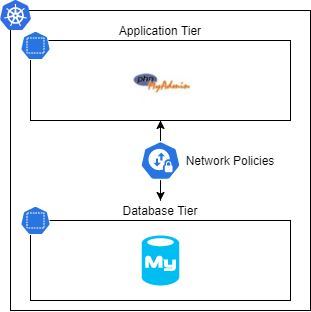

Kubernetes Cluster Hardening¶
Network security¶
Kubernetes clusters are often considered as black boxes, which conduct network security teams to focus on securing the network outside the cluster. However, probably because of a lack of knowledge, the internal cluster network is not secured at all. Kubernetes offers an out of the box feature named Network Policies which allows users to create a multi tier architecture inside the clusters.
Let's create a basic two tiers architectures inside a cluster. It will be composed of a MySQL database and a phpMyAdmin application.
The demo code will be hosted on github

Demo Application Architecture
Pre-requisite¶
Network policies are implemented by a network plugin. To use network policies, you must be using a networking solution which supports NetworkPolicy. Creating a NetworkPolicy resource without a controller that implements it will have no effect.
(extract from the kubernetes doc)
As the demo runs on an AKS clusters, the choosen network policy is calico.
Container Network Interface¶
CNI (Container Network Interface), a Cloud Native Computing Foundation project, consists of a specification and libraries for writing plugins to configure network interfaces in Linux containers, along with a number of supported plugins. CNI concerns itself only with network connectivity of containers and removing allocated resources when the container is deleted. Because of this focus, CNI has a wide range of support and the specification is simple to implement.
(source)
Deploy components¶
Execute the command below to create :
- the app and data namespaces
- the mysql pod and service
- the phpMyAdmin pod and service
kubectl apply -f namespaces.yaml
Warning
The *-policy.yaml-hold files must be named *-policy.yaml-hold to avoid to be deployed
Verify the deployment¶
-
Open a tunnel to the phpmyadmin service
kubectl port-forward -n app svc/phpmyadmin 8080:80 -
Connect the phpMyAdmin UI
- The phpMyAdmin web site should be accessible
Apply default network policies¶
The purpose of this policy is to block any ingress or egress trafic using the data namespace. It is wise to apply a such rule to all the namespaces and explicity allows only the minium required connections.
apiVersion: networking.k8s.io/v1
kind: NetworkPolicy
metadata:
name: default-deny-all
namespace: data
spec:
podSelector: {}
policyTypes:
- Ingress
- Egress
Apply this NetworkPolicy will break the connection between phpMyAdmin and the backend MySQL datatabase.
Authorize trafic¶
The NetworkPolicy below will enable the trafic on port 3306 from pods, in namespaces configured with the label tier=app, which have the label app=phpmyadmin.
apiVersion: networking.k8s.io/v1
kind: NetworkPolicy
metadata:
name: allow-from-phpmyadmin-ingress
namespace: data
spec:
podSelector: {}
policyTypes:
- Ingress
ingress:
- from:
- namespaceSelector:
matchLabels:
tier: app
podSelector:
matchLabels:
app: phpmyadmin
# - ipBlock:
# cidr: 172.17.0.0/16
# except:
# - 172.17.1.0/24
ports:
- protocol: TCP
port: 3306
Info
Find more information about NetworkPolicy in the official documentation
Security compliance¶
Admission webhook¶
Admission webhooks are HTTP callbacks that receive admission requests and do something with them. You can define two types of admission webhooks, validating admission webhook and mutating admission webhook. Mutating admission webhooks are invoked first, and can modify objects sent to the API server to enforce custom defaults. After all object modifications are complete, and after the incoming object is validated by the API server, validating admission webhooks are invoked and can reject requests to enforce custom policies.
(source)
Open Policy Agent (OPA) Gatekeeper¶
It is an open source project used to enforece a set of compliance rules. As example, it may enforce the usage of a company docker registry and reject any other registries. It can also help to analyze the incoming request content and ensure that the container does not run as root.
OPA Gatekeeper comes with a public library provided users with a pre-defined set of bets practices.
Pre-requisite¶
OPA GateKeeper must be deployed on the demo cluster.
Example¶
In this example, we will only allow phpMyAdmin and mysql to be deployed in the cluster.
Deploy the rule template¶
The rule template will a create a Custom Ressource Definition (CRD) which will be usable to enforce some practices.
The ConstraintTemplate below is a standard one used to enforce container iamge source repository. The Rego language is used to speficy the template behaviour, this abstraction prevent the hardship of custom admission webhook creation and make simplier the creation of constraints policies.
apiVersion: templates.gatekeeper.sh/v1beta1
kind: ConstraintTemplate
metadata:
name: k8sallowedrepos
annotations:
description: Requires container images to begin with a repo string from a specified
list.
spec:
crd:
spec:
names:
kind: K8sAllowedRepos
validation:
# Schema for the `parameters` field
openAPIV3Schema:
type: object
properties:
repos:
type: array
items:
type: string
targets:
- target: admission.k8s.gatekeeper.sh
rego: |
package k8sallowedrepos
violation[{"msg": msg}] {
container := input.review.object.spec.containers[_]
satisfied := [good | repo = input.parameters.repos[_] ; good = startswith(container.image, repo)]
not any(satisfied)
msg := sprintf("container <%v> has an invalid image repo <%v>, allowed repos are %v", [container.name, container.image, input.parameters.repos])
}
violation[{"msg": msg}] {
container := input.review.object.spec.initContainers[_]
satisfied := [good | repo = input.parameters.repos[_] ; good = startswith(container.image, repo)]
not any(satisfied)
msg := sprintf("container <%v> has an invalid image repo <%v>, allowed repos are %v", [container.name, container.image, input.parameters.repos])
}
Enforce a constraint¶
Execute the code below
apiVersion: constraints.gatekeeper.sh/v1beta1
kind: K8sAllowedRepos
metadata:
name: allowed-phpmyadmin
spec:
match:
kinds:
- apiGroups: [""]
kinds: ["Pod"]
namespaces:
- "app"
parameters:
repos:
- "phpmyadmin"
This constraint will forbid the deployment of containers other than the phpmyadmin one. Because OPA Gatekeeper templates are used to create new Custom Resource Definision, it becomes easy to add constraints.
Execute a deployment test¶
Execute the code below
apiVersion: v1
kind: Pod
metadata:
labels:
run: pods
name: pods
namespace: app
spec:
containers:
- image: nginx
name: nginx
resources: {}
dnsPolicy: ClusterFirst
restartPolicy: Always
---
apiVersion: v1
kind: Pod
metadata:
labels:
run: pods
name: pods
namespace: app
spec:
containers:
- image: phpmyadmin
name: phpmyadmin
resources: {}
dnsPolicy: ClusterFirst
restartPolicy: Always
The console will show and error about the nginx deployment, indeed the nginx container is not authorized to be deployed in the app namespace
Sum-up¶
This handons is just an overview of two technology which can be used to ensure security of a kubernetes cluster. I advise trainees to go deeper in a network plugin such as calico and to get familiar with the Rego language as it will allow them to create amazing custom rules.